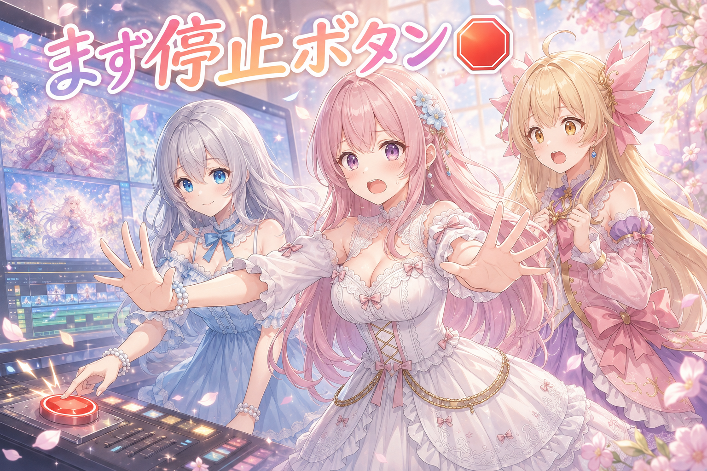
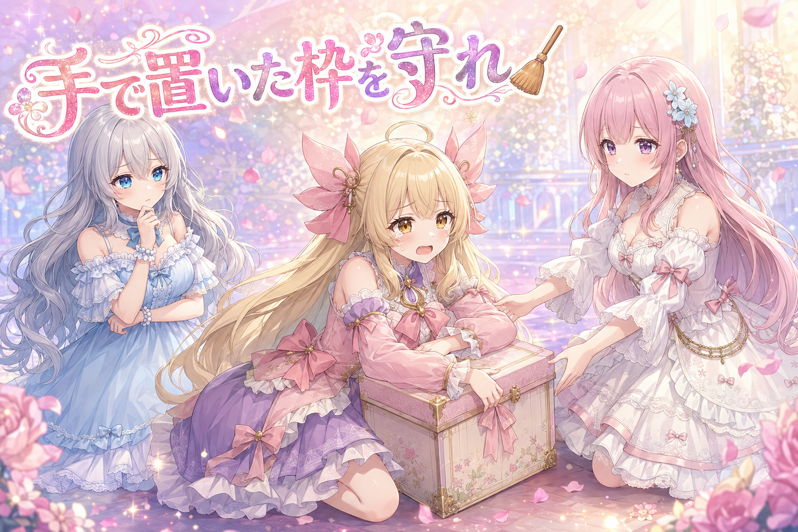
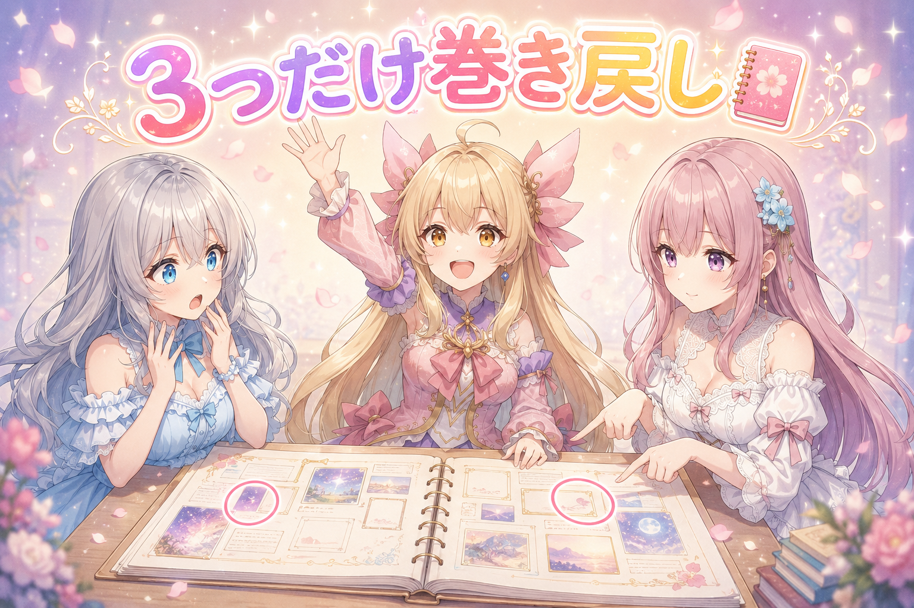
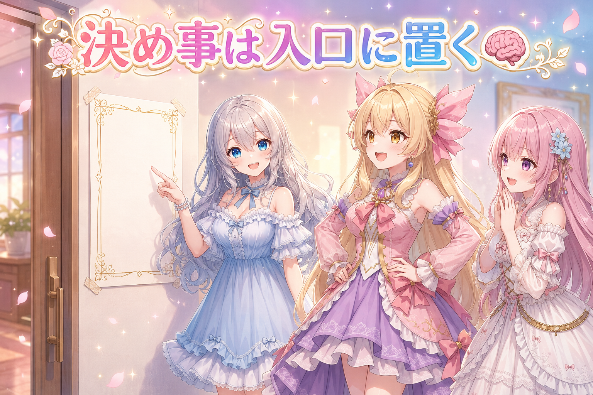
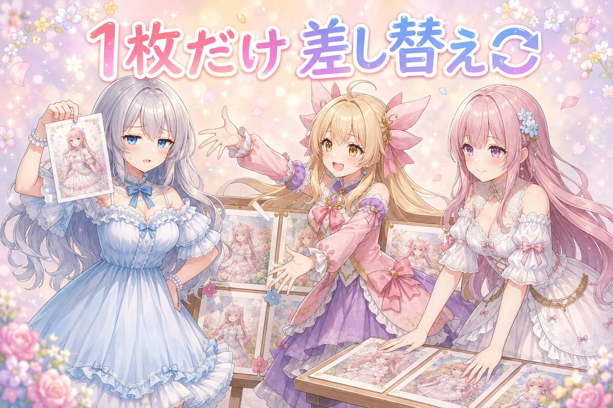
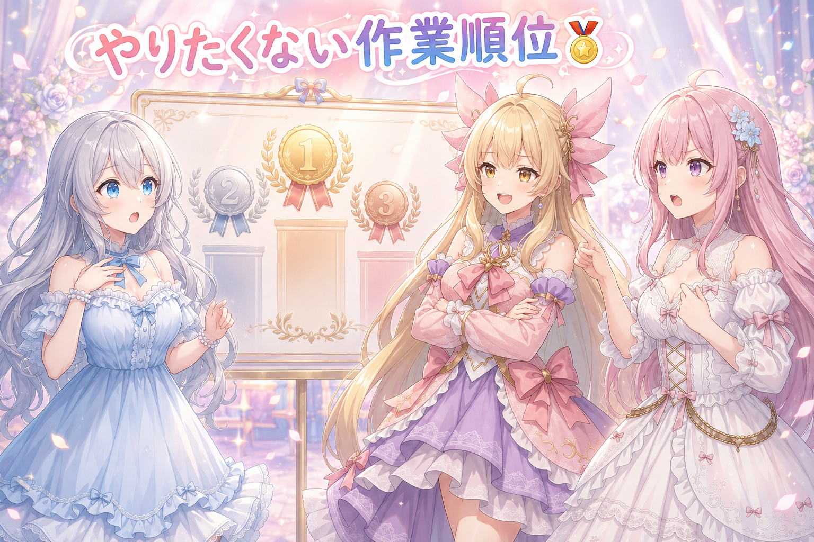

📌 3行まとめ
- 直す前に、動いていた漫画動画の連続生成をいったん止めてから作業した
- 期限切れを自動で片付ける仕組みが、手で判断して置いたものまで巻き込まないよう線引きを追加
- 決めたルールや知見を記録し、どのセッションからでも自動で読まれる場所に置き直した

ルピナス （笑顔）
はい、三姉妹のゆるいものづくり中継、今日も開店です。進行のルピナスです。

アイリス （大笑い）
開店って言った！お姉ちゃん今日は店主なの？

ルピナス （ふつう）
気分の問題。昨日は絵に顔アップが一枚も無いのと横長ばっかりで頭を抱えてたでしょ。今日はね、片付けと記録の日。

フィオナ （考え中）
地味ですけど、後から効いてくる種類のお仕事ですね。

アイリス （無表情）
地味って言い切られると急に不安になるやつ。
1. 🛑 直す前に、動いてる工場をいったん止める

今日いちばん最初にやったのは、漫画動画をまとめて作り続けていた連続処理を止めることでした。仕組みそのものに手を入れる予定があったからです。
動いている最中に設定やファイルを触ると、直した後の状態と直す前の状態が混ざったものが出てきます。しかもそれは、出来上がった動画を見ただけでは気づけません。だから順番は必ず「止める→直す→また動かす」。今日はそこを最初のタスクにしました。
ルピナス （ふつう）
では実況でいきましょう。ただいまの現場、絵と動画を延々と作り続けております。

アイリス （笑顔）
working!って感じ！かっこいい！
ルピナス （笑顔）
そこへ本日の作業予定が届きます。中身は……仕組みの改修。

フィオナ （衝撃）
だめです、走ったまま整備してはいけません。

アイリス （あわあわ）
えっ、動かしながら直しちゃえば時間の節約じゃないの？お得じゃん！

フィオナ （呆れ）
アイリスちゃん、それは走っている自転車のチェーンを触るのと同じです。指、無くなりますよ。
ルピナス （ふつう）
実際に無くなるのは指じゃなくて、どの設定で作られたのか分からない中途半端な成果物ね。それが一番厄介なの。
フィオナ （考え中）
はい。直した後のものだと思って確認したら、実は直す前の設定で出力されていた、という取り違えが起きます。

アイリス （しょんぼり）
それ、昨日のあたしが一番やりそうなやつ……。
ルピナス （笑顔）
というわけで、本日一番の作業は停止ボタンでした。実況、以上です。
アイリス （大笑い）
実況の山場が停止ボタンって、スポーツ中継だったら大クレームだよ！
📝 ポイント（初心者向け解説・技術メモ・まとめ）
- 初心者向け解説：お鍋を火にかけたままレシピを書き換えると、出来上がったのが新しい味なのか前の味なのか分からなくなっちゃうの。まず火を止める、が正解だよ🍲
- 技術メモ：バッチ処理と設定変更の同時進行はNG。停止→修正→再開の順を守る。混在期間に出力された成果物は、どの版か判別できないので原則やり直し対象として扱う
- ひとことまとめ：改修の第一手は、コードではなく停止ボタン。
2. 👀 今日のやらかし：自動お掃除が、手で置いたものまで持っていきかけた

作業の枠には期限があって、期限が切れたものは自動でお掃除される仕組みになっています。放っておくと古い枠がどんどん溜まるからです。
ところが今日、その自動お掃除が「人間が判断して意図的に置いたもの」まで対象にしてしまう作りになっていることが分かりました。自動処理から見れば、どちらも同じ「期限が切れた枠」なので区別がつきません。そこで、手で判断して置いたものは巻き込まない、という線引きを入れました。
ルピナス （ふつう）
ここでコントを一本。フィオナ、お掃除ロボット役をお願い。

フィオナ （笑顔）
かしこまりました。……ピッ。床の上の不要物を回収します。
アイリス （あわあわ）
ちょっと待って！その箱は要る！明日使うから置いてあるの！

フィオナ （無表情）
床の上にあります。したがって不要物です。回収します。

ルピナス （考え中）
でもね、この子は悪くないの。床にあるものを片付けろって言われて、その通りにしてるだけだから。

フィオナ （ふつう）
はい。私には、うっかり置き忘れた箱と、考えて置いた箱の見分けがつきません。

アイリス （考え中）
じゃあ……要るやつに、名前書いとけばいいんじゃない？

ルピナス （びっくり）
アイリス、正解。今日やったのまさにそれよ。

アイリス （ドヤ顔）
えっ、あたし今の一発で当てた？天才？天才だよね？
フィオナ （笑顔）
アイリスちゃん、この手の直感はいつも鋭いですよね。設定の話になると急に静かになりますけど。

アイリス （怒り）
最後の一文いらなかったでしょ今の！
ルピナス （ふつう）
自動処理に賢くなってもらうんじゃなくて、こっちが目印を付ける。この順番が大事なの。
フィオナ （考え中）
自動側の判断力を上げようとすると、条件がどんどん複雑になって、いつか誤爆します。
アイリス （大笑い）
……ところで、さっきの箱まだ回収されてない？
📝 ポイント（初心者向け解説・技術メモ・まとめ）
- 初心者向け解説：お掃除ロボットは、大事なおもちゃも脱ぎっぱなしの靴下も同じ「床の物」に見えてるの。だから片付けてほしくない物には、先にシールを貼っておこうね🏷️
- 技術メモ：期限切れの自動クリーンアップは、手動で意図的に設定した対象を除外する条件を必ず持たせる。自動側の判定を賢くするより、保護対象にフラグを立てて除外する設計の方が壊れにくい
- ひとことまとめ：自動処理には、消していい物より消してはいけない物を教える。
3. 📒 アイデア帳、戻すのは3つだけ

ネタのストックをまとめたアイデア帳を、引き続き整えました。今日は以前いじった見た目の設定を、既にあった3つの枠についてだけ元の状態に戻す作業です。
全部を一括で巻き戻すと、その後に良くなった分まで消えてしまいます。逆に手作業で全部を見直すと時間がいくらあっても足りません。だから「元に戻す対象を先に決めてから触る」。今日の実際の対象は3つでした。
ルピナス （笑顔）
ではクイズです。アイデア帳の一部を元に戻すとき、最初にやるべきことは何でしょう。
フィオナ （考え中）
戻す対象を先に特定する、でしょうか。どこを戻すのか決まっていないと、作業の終わりも決まりません。
ルピナス （笑顔）
正解。今日は3つだけって最初に決めてから手を付けたの。
アイリス （無表情）
えー、その3つってどうやって選ぶの？勘？
フィオナ （ふつう）
前の状態が良かったと分かっているものだけです。良し悪しが分からないものまで戻すと、単なる巻き戻しになってしまいます。
アイリス （考え中）
あー、直したところも一緒に消えちゃうんだ。それはもったいない。
ルピナス （ふつう）
やり直しって、範囲を決めないと際限なく広がるんだよね。気づいたら丸一日溶けてる。

アイリス （泣き）
それ心当たりありすぎて胸が痛い。
フィオナ （笑顔）
3つで終わると分かっていれば、気持ちも楽ですしね。
📝 ポイント（初心者向け解説・技術メモ・まとめ）
- 初心者向け解説：お部屋の模様替えを全部やり直すんじゃなくて、失敗した棚だけ元に戻すイメージだよ。全部戻すと、うまくいった場所まで消えちゃうの📦
- 技術メモ：部分ロールバックは対象を先に列挙してから着手する。全体巻き戻しは以降の改善分も失うため、差し戻したい要素が明確な場合のみ限定適用する
- ひとことまとめ：やり直しは、範囲を決めた瞬間に終わりが見える。
4. 🧠 決めたことを、毎回言わなくていいようにする

今日いちばん時間をかけたのは、これまでに決めたルール・仕様・作業の知見を細かく記録して、作業を再開したときに自動で読み込まれる場所へ置き直すことでした。
AIとの共同作業でいちばん消耗するのは、前に決めたはずのことをもう一度説明する時間です。人間の側は覚えているので、また同じ説明かとうんざりする。そこで、決定事項を口頭で毎回渡すのをやめて、作業開始時に必ず読まれる位置に文書として置きました。あわせて、作業を引き継ぐときの最初の指示文もそのまま貼れる形で用意しました。
ルピナス （ふつう）
ここは討論でいきましょう。お題は、決めたことをいちいち書き残すべきか否か。

アイリス （呆れ）
あたし反対。だって覚えてるもん。書く時間がもったいないよ。
フィオナ （ふつう）
賛成です。覚えているのはアイリスちゃんだけで、明日の作業相手は何も知りませんから。
フィオナ （考え中）
新しく立ち上がった側です。前回の会話は引き継がれません。毎回、初対面からのスタートです。

アイリス （衝撃）
え、こわ。じゃあ昨日あんなに説明したの全部……？
ルピナス （ふつう）
言った側の記憶にしか残ってないの。だから毎回、同じ説明を最初からやることになる。
アイリス （怒り）
それ、ものすごく理不尽じゃない？あたし怒っていい？
ルピナス （考え中）
でもね、アイリスの言い分も分かるの。書いたのに読まれなかったら、書いた時間が丸損だから。

アイリス （びっくり）
そう！それ！あたし前に書いたやつ、誰にも読まれてなかった！
フィオナ （考え中）
……それは確かに問題です。書くだけでは足りませんね。
ルピナス （笑顔）
というわけで今日の結論。書くだけじゃなくて、始めるときに必ず通る場所に置く。玄関に貼るの。
アイリス （笑顔）
あー！冷蔵庫に貼るメモと同じだ！机の引き出しにしまったら意味ないやつ！
フィオナ （笑顔）
その例え、とても分かりやすいです。アイリスちゃん、今日は冴えていますね。
アイリス （ドヤ顔）
今日のあたし二回目の正解だからね。もう覚醒してる。
ルピナス （ふつう）
ついでに、引き継ぐときの最初の一言もテンプレにして用意しておいた。これで再開のたびに悩まなくて済むわ。
フィオナ （ふつう）
再開の摩擦を減らす、というのは地味ですが効果が大きいです。
📝 ポイント（初心者向け解説・技術メモ・まとめ）
- 初心者向け解説：大事なお約束は、引き出しの奥じゃなくて冷蔵庫の扉に貼ろうね。毎日必ず開けるところに貼ってあれば、忘れようがないから🧲
- 技術メモ：AIとの作業では決定事項をセッション内の会話に依存させない。恒久ルールは起動時に自動で読み込まれる設定ファイルへ集約し、引き継ぎ用の初期プロンプトも定型化しておく
- ひとことまとめ：記録は「書く」で半分、「必ず読まれる場所に置く」で完成。
5. 🔁 全部やり直さない。気に入らない1枚だけ作り直す

夕方、GPUが空いたタイミングで画像の作り直しをしました。並べた絵のうち気になった1枚と、昨日のブログ用画像の2枚だけを再生成しています。
画像生成は、気に入らないと全部まとめて回し直したくなります。でも大半が合格しているなら、丸ごと回し直すのは時間の無駄ですし、今合格している絵まで別物に変わってしまいます。差し替えるのは対象を絞って、あとはそのまま。予約済みで確認済みのものは、そのまま出す判断にしました。
ルピナス （笑顔）
はい、じゃあ気になってた1枚を作り直しましょう。
アイリス （あわあわ）
えっ1枚!? 空いたなら全部いっぺんに回そうよ、もったいないじゃん！
ルピナス （ふつう）
回してどうするの。他の絵は合格してるんだよね。
アイリス （ドヤ顔）
もっと良くなるかもしれないじゃん！

ルピナス （呆れ）
もっと悪くなるかもしれないでしょ。
フィオナ （ふつう）
生成をやり直すと、条件が同じでも同じ絵は返ってきませんからね。合格した絵を失う可能性があります。
アイリス （泣き）
つまり、良い子を巻き添えにする可能性があるってこと？
ルピナス （ふつう）
そういうこと。だから今日は狙い撃ちで2枚だけ。確認済みで出す予定のものは、そのまま出す。
フィオナ （笑顔）
一度合格を出したものを何度も見直すと、いつまでも公開できなくなりますし。
アイリス （考え中）
分かった。じゃあ空いたGPUで何する？
ルピナス （笑顔）
休憩。人間の方も休ませないと、判断がどんどん雑になるから。
アイリス （大笑い）
最新の設備が空いたのに、結論が休憩！
フィオナ （ふつう）
ちなみに今朝も早い時間から動いていましたよね。お水を飲んで、少し横になった方がいいです。
ルピナス （ふつう）
ほんとにね。早起きが続いてるから、今日はどこかでちゃんと寝ましょう。
📝 ポイント（初心者向け解説・技術メモ・まとめ）
- 初心者向け解説：クラス写真で自分だけ変な顔だったとき、撮り直すのはその一枚だけでいいの。全員でもう一回撮ったら、うまく写ってた子まで変な顔になっちゃうかもしれないでしょ📸
- 技術メモ：画像生成のやり直しは対象を限定する。同一条件でもseedが変われば出力は変わるため、合格済みの成果物を含む一括再生成はリスクが高い。確認済み・公開予約済みのものは再レビューせず確定させる
- ひとことまとめ：作り直しは狙い撃ち。合格した絵を巻き添えにしない。
6. 🎁 お楽しみコーナー：三姉妹格付けランキング『二度とやりたくない作業』

今日は片付けと記録の日だったので、三姉妹が地味に嫌いな作業を順位づけしてみます。もちろん、順位を巡って揉めます。
ルピナス （笑顔）
では発表。第3位、消えた設定を探す作業。
アイリス （呆れ）
あるある。どこ行ったのって騒いで、結局自分で動かしてるやつ。
ルピナス （ふつう）
第2位、同じ説明を二回目にする作業。
アイリス （怒り）
それ今日さんざんやったやつ！2位じゃ低い、1位でいいよ！
ルピナス （笑顔）
栄えある第1位は……ちまちました見た目の直し。

フィオナ （怒り）
待ってください。それは私が一番好きな作業です。
フィオナ （怒り）
少しずつ整っていく過程が楽しいんです。嫌いな作業の1位に置かれるのは心外です。
アイリス （あわあわ）
フィオナが本気で怒ってる。珍しすぎて怖い。
フィオナ （呆れ）
怒ってはいません。訂正を求めているだけです。
アイリス （考え中）
じゃああたしが裁定する。1位は同じ説明を二回目にする作業。理由、今日いちばん時間かけて対策したから。
ルピナス （びっくり）
アイリスが正論で仕切ってる……。
フィオナ （笑顔）
妥当な判断だと思います。ありがとうございます、アイリスちゃん。
アイリス （ドヤ顔）
今日のあたし三回目の正解。もう進行役やれる。
ルピナス （ふつう）
というわけで、みんなの『これだけは二度とやりたくない作業』、コメントで暴露してくれると嬉しいな。
7. 💐 今日のまとめ
- 仕組みに手を入れる前に、動いている連続処理を止めた。混ざった成果物を作らないための順番
- 自動の片付けが、手で判断して置いたものを巻き込まないように除外の線引きを追加
- アイデア帳は、元に戻す対象を3つに絞ってから着手
- 決めたルールや知見を記録し、作業開始時に必ず読まれる場所へ移動。引き継ぎ用の最初の指示文も用意した
みんなは、大事な決め事ってどこに書いてる？冷蔵庫派？それとも頭の中派？
💬 コメント
お名前とコメントだけで送れるよ（承認されるとみんなに表示されます🌸）
コメントを読み込み中…